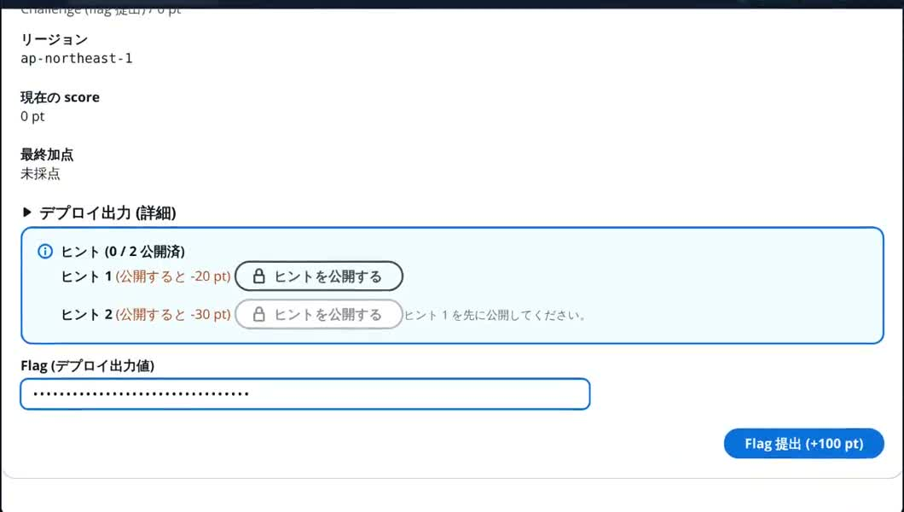

TENKACLOUD / HANDS-ON CLOUD EXERCISES
Practice before
production.
Build cloud systems and respond to incidents without touching production. TenkaCloud gives teams a place to solve realistic problems and see how they did.
BULL LLC / Developer of TenkaCloud

EXAMPLE EXERCISE / INCIDENT RESPONSE
The morning after a deploy,
the service won’t open.
01 / TRIAGE
Narrow down the cause
Assess the situation as a team and decide where to look first.
02 / RECOVER
Restore the service
Make a fix in the exercise environment and check that the service is back.
03 / REVIEW
Compare notes
Use the scoring results to discuss what the team noticed and where it got stuck.
Practice from first response to recovery without taking production down.
WHAT TEAMS CAN PRACTICE
Start with one problem
your team actually has.
Security
Can the team spot unintended exposure before release?
Cloud builds
Can engineers go hands-on from design through deployment?
Incident response
Can the team diagnose and recover from an outage together?
Working across teams
Can engineers from different groups solve the same problem together?
WHAT IS DIFFERENT
You can shape it
to your own workplace.
01
Choose an environment for the exercise
Choose a local exercise or a supported cloud environment. Available actions and scoring vary by exercise.
02
Write your own problems
Write the statement, hints and answer from your own system design or a past incident. Mix them with problems from the public catalog.
03
Open source you run yourself
Apache-2.0. Host it on one PC or in your own AWS account, depending on your own operating requirements.
WHERE IT RUNS
Choose where the platform runs
and where teams practice.
TenkaCloud platform
One PCData stays in SQLite. No AWS account needed.
AWSLambda and Cognito, with Turso or DynamoDB.
→
Exercise environments (per-team credentials)
- AWS
- Google Cloud
- Azure
- Sakura Cloud
Supported clouds and actions vary by exercise. Docker exercises can also run on the host PC.
Participants join from their own devices over the office LAN or Tailscale. Joining Docker exercises from other devices needs a Linux host PC with isolation enabled; we check this with you in advance.
WHO WE’D LIKE TO MEET
They want to run a drill.
They haven’t found a way yet.
- Training ends before participants can try it hands-on.
- New engineers need a safe way to revisit a real incident.
- Preparing problems and environments makes repeat sessions hard.
We’d like to meet the person responsible for cloud training, SRE, or security.
BEING A PARTNER
Run one event with us.
What we do
- Work with you from prep to the event day. Problem selection, host PC setup, rehearsal and running the day.
- Prioritize the bugs and requests you raise. Fixes ship as open source.
- Help you build problems. Start from material close to your own systems.
What we ask
- Choose one topic and try it with a real team. A small session of about two teams is enough.
- Join a 30-minute debrief afterwards. We go through the scoring history together.
- Tell us what you noticed, good and bad. A GitHub issue or an email both work.
We will ask after the event whether we may share it as a case study. Because it is open source, you can keep running events on your own afterwards.
HOW TO START
Three steps from first call to event.
01 / ONLINE, 30 MIN
Call
We start with one real situation. If we decide to try it, we check expected participation and network constraints.
02 / ON THE HOST PC
Rehearsal
We solve problems together to check access and scoring.
03 / EVENT DAY AND AFTER
Event and debrief
We run the day with you, then talk for 30 minutes.
WHAT IS PUBLIC
See how it works before you try it.
Source
The platform and problem catalog are Apache-2.0 and the Simulator is MIT, all on GitHub. Inspect it before you try it.
Book
“Build Your Own Cloud Competition” on Leanpub explains the design, with a Japanese edition on Zenn.
Talks
JAWS-UG Yokohama #103 × SRE and TenkaCloud UG #1 (both September 2026), CCoE Kansai LT and ACP2026. All presentations
WHAT WE’RE ASKING FOR
Know a team like this?
We’d welcome an introduction.
We’d like to hear about one real situation they don’t get to practice today and see whether TenkaCloud is worth trying for it.
An introduction does not commit anyone to buying or running an event.
TenkaCloud is independent and is not provided, sponsored, or endorsed by Amazon Web Services, Inc. AWS is a trademark of Amazon.com, Inc. or its affiliates.
APPENDIX / PRICING (EXCLUDING TAX)
If you want us to run it for you
STARTER
¥500K
/ event
Pilot, up to 2 teams
- Problems from the public catalog
- Environment setup and event-day support
HOSTED
¥1.5M
/ event
Up to 5 teams (about 20 people)
- Fully run, from setup to event day
- Rehearsal before the event
- Debrief report
ANNUAL ARENA
¥6M+
/ year
We run 4 events a year
- Beginner-to-advanced learning path
- Facilitator playbook template
- A debrief report for every event
The open-source platform is free. Custom problems and CCoE advisory (monthly) are quoted separately. Cloud usage is separate and billed directly to your own accounts. See pricing and scope for details.